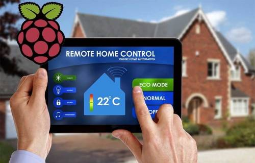
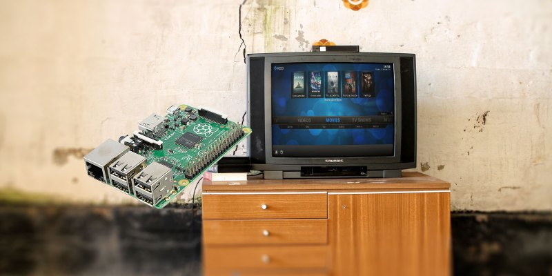
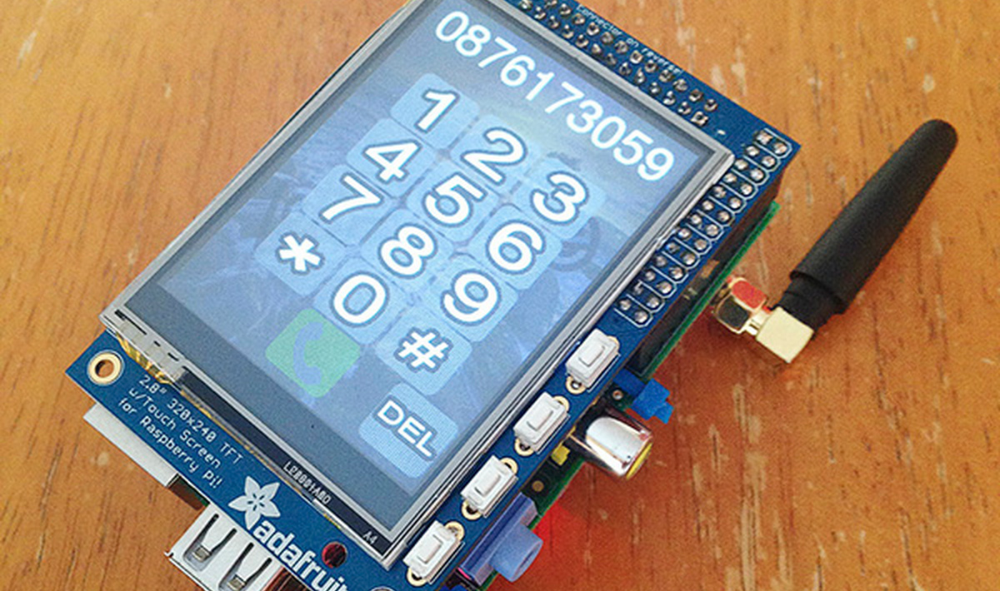

Il Raspberry PI è un mini PC sviluppato nel Regno Unito dalla Raspberry Pi Foundation, creato per generare interesse tra le giovani generazioni e costituire un valido supporto agli studi relativi all’informatica e alla programmazione. Si tratta di un computer embedded che può essere utilizzato non soltanto dai tecnici appassionati, ma anche da coloro che sono alla ricerca di un computer economico e compatto dalle discrete prestazioni.
openHAB è un software Open Source sviluppato in Java che permette di automatizzare la propria abitazione o ufficio esattamente come si desidera, visto che è possibile personalizzare ogni sua singola funzione. OpenHAB è molto versatile ed è installabile sulla maggior parte delle piattaforme, come ad esempio Windows, MacOS e Linux. Altro aspetto che lo rende interessante è quello di poter interfacciare qualsiasi dispositivo, come l’impianto di illuminazione, la TV, lo stereo, l’impianto di allarme, l’apertura delle serrande e tutto quello che si desidera desiderare.
Questo "computer" può essere utilizzato non solo per la domotica ma anche per tantissime altre cose come, ad esempio, la riproduzione di giochi retrò su un televisore o monitor esterno.
|  |  |  |